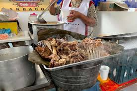
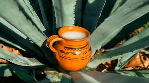
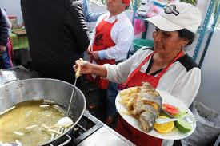

2 y 3 de Agosto
Se refiere a una feria gastronómica dónde se ofrece deliciosa barbacoa de borrego cocinada en horno de tierra, preparada por los mejores cocineros de la región. Hay una variedad de platillos y acompañamientos típicos mexicanos.

2 y 3 de Agosto
Es una feria donde se ofrece una amplia variedad de puiques curados artesanales, preparados por maestros pulqueros de la región. Se puede disfrutar de pulques de sabores como piñón, avena, fresa, mango, café, guayaba, nuez, apio, zarzamora y coco

15 y 16 de febrero
Es una feria gastronómica donde se ofrece una amplia variedad de platillos de trucha artesanal, preparados por chefs y productores locales de la región.